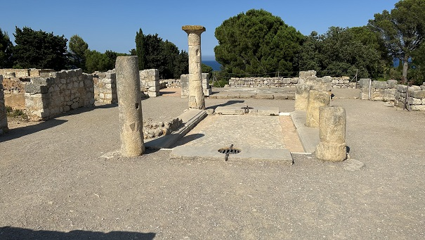
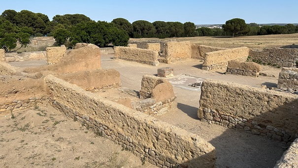
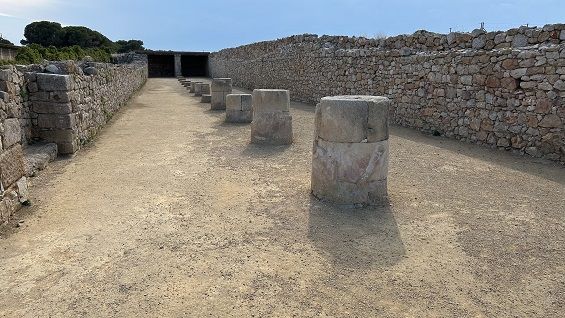
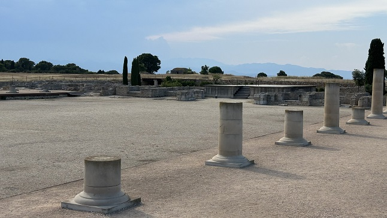
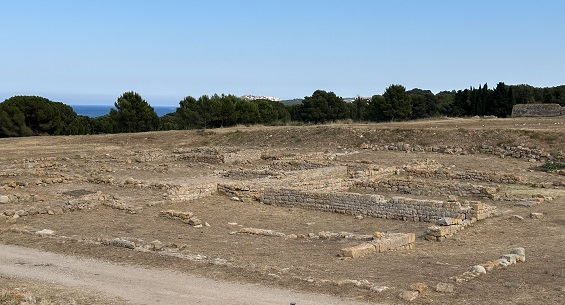
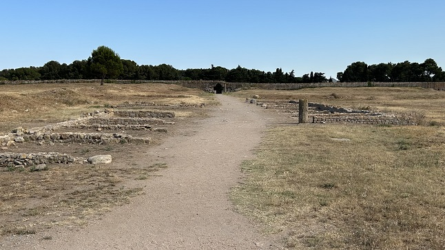
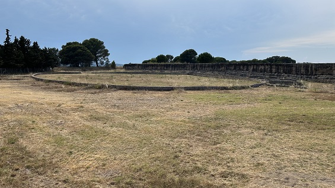
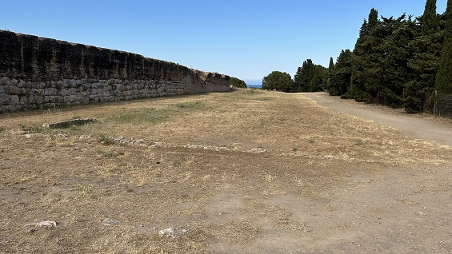

|
MUNICIPIUM EMPORIAE
|
||||||||||||
|
En el año 218 a.e.c. con motivo de la II Guerra Púnica, el ejército romano comandado por Cneo Cornelio Escipión desembarcó en el puerto de Ampurias con el objeto de cerrar el paso por tierra a las tropas cartaginesas. En el año 195 a.e.c. Marco Porcio Catón instaló un campamento militar en Ampurias, con el objetivo de mantener el control del puerto y asegurar el desembarco de futuras tropas. Los restos conocidos del campamento corresponde a su parte central, del que se conversan las primeras hiladas de bloques de caliza asentadas sobre la roca. Con el nacimiento de la ciudad en el siglo I a.e.c. se desmanteló parte del campamento y solo se conservan los cimientos que fueron reutilizados en las nuevas construcciones. A finales del siglo II y principios del siglo I a.e.c empieza la romanización de la zona con la fundación de la ciudad de nueva planta. La ciudad griega paso a ser con el tiempo un activo barrio portuario. También en esta época se construyen los edificios públicos y se remodela Neápolis. Del Municipium Emporiae tenemos testimonio por Tito Livio, quien nos narra como Julio César licenció a un contingente de soldados veteranos que se asentaron en la ciudad y como se unieron indígenas, griegos y romanos en una misma ciudadanía romana. La ciudad romana se asentó sobre el cerro, ocupando una superficie rectangular de 22,5 hectáreas. Sus limites se aprecian gracias a los restos de la muralla que la delimitaban. Se cree que su función no era exclusivamente militar o defensiva, se cree que tiene relación con el ritual fundacional, la relimitación del pomerium.
Las excavaciones han confirmado la retícula urbana regular desde la creación de la ciudad. Las insulaes estaban perfectamente delimitadas apreciándose sus cardines y decumani. Destacan las insulae de la zona oriental, cuyas domus parecen ser las más antiguas y estarían ocupadas por la elite de la ciudad. En la denominada insulae 30 se hallaban las
Termas de la ciudad. (s. I-II). Las termas emporitanas tenían diferentes
salas, como el caldarium (sala cálida con bañeras de agua caliente), el
tepidarium (sala de ambiente templado), el frigidarium (sala fría con bañera de
agua fría) y el sudatorium (sauna).
Domus de los Mosaicos.
(s. I a.e.c - I). Construida durante el siglo I a.e.c. siguiendo los
modelos de arquitectura itálica, esta casa es un verdadero palacio
urbano, debido a sus dimensiones y características constructivas. El
cuerpo principal de la casa se articulaba alrededor del atrium, un patio
central descubierto, al que daban las habitaciones principales de la
casa. 
Ver Villas romanas Domus del Ara del Gallo. (s. I a.e.c - II). Casa con atrio y varios jardines porticados que también conserva pavimentos de mosaicos. El nombre de esta domus deriva de un altar de culto domestico hallado en el jardín, que estaba decorado con pinturas. La decoración del ara presenta motivos pintados como un gallo, dos serpientes enroscadas y guirnaldas verdes con frutos rojos. Está expuesto en el museo.

De las 70 insulae de la ciudad solo se ha excavado el 10%. Al foro se accedía a través del cardo maximus, que nacía en la puerta meridional. El foro era el centro de la vida pública, sus limites no se conocen con toda seguridad debido a las reformas posteriores. En su parte sur y este estaba la zona comercial, las tabernaes, al norte se hallaba la zona religiosa en cuyo centro se hallaba el templo de la Triada Capitolina. Este templo estaba dedicado a Júpiter, Juno y Minerva, sus características arquitectónicas son típicamente itálicas. Se levanta sobre un podium de sillares de arenisca, apreciándose el relleno de piedras y argamasa. Era un templo de tipo tetrástilo, con un pórtico frontal con cuatro columnas; próstilo, columnado alrededor del vestíbulo; y pseudoperíptero, con pilastras alrededor de la Cella donde estarían las imágenes sobre un basamento. Su situación era privilegiada en la zona sagrada delimitado por un Criptopórtico con forma de U, del que se aprecian restos de las estructuras inferiores y de la columnata central.

En época de Augusto con la consiguiente remodelación del Foro y de la ciudad, a ambos lados del templo capitolino se alzaron sendos templetes, uno de e ellos dedicado al culto imperial.

En la zona oriental se hallaba la Basílica de la que se conserva parte del basamento y restos de la cimentación. Tenia una sola nave. Junto a ella se hallaba la Curia de la que solo se conservan los restos de su basamento. El foro tenia una superficie de cuatro insulae. Reconstrucción hipotética del templo y mosaico hallado en una de las tabernae.

El sector mejor conservado de la Muralla en su parte sur, donde se haya una de las puerta de entrada realizada con sillares de caliza y hormigón. Aun son visible las roderas de los carros y una representación fálica que invocaba la protección y prosperidad de la ciudad. La muralla en su parte oriental fue destruida y la ciudad ampliada. También se aprecian restos de la muralla occidental y septentrional, así como en la casa nº 1.

A mediados del siglo I se construyó a extramuros en la zona meridional de la muralla el Anfiteatro y la Palestra. Los restos conservados del Anfiteatro son unos muros dispuestos radialmente alrededor de la elipse. Destaca la poca anchura del graderío y la gran extensión de la arena 74x44,4m. Su capacidad se estima para unos 3.300 espectadores.

La Palestra tenia una forma rectangular de 100x55m, sus restos son escasos y se cree que estaría porticada.

Las necrópolis estaban situadas alrededor de la ciudad, junto a los caminos que partían de las puertas de la ciudad. Los enterramientos se extienden sobre las vertientes occidental y meridional del cerro romano. El rito más utilizado en los primeros siglos fue la incineración y sus tumbas eran muy simples. También se han hallado enterramientos de inhumación con tegulae a doble vertiente.
|